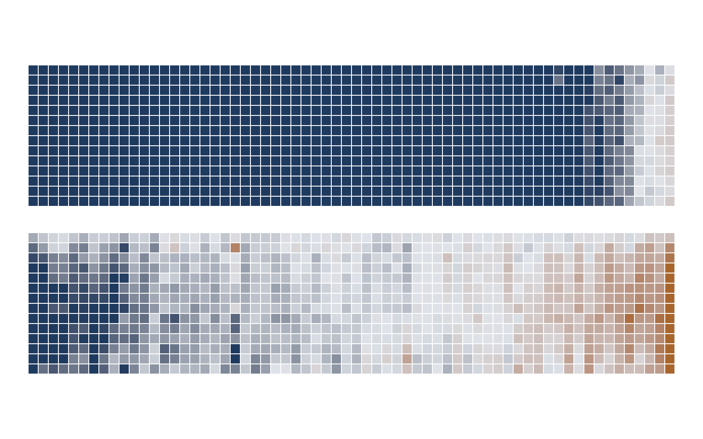
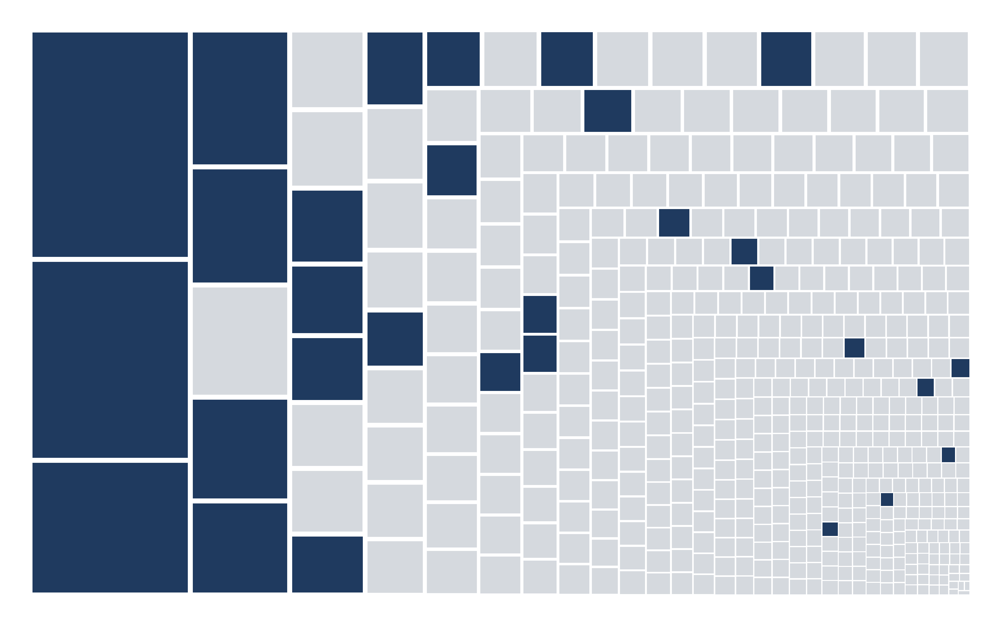
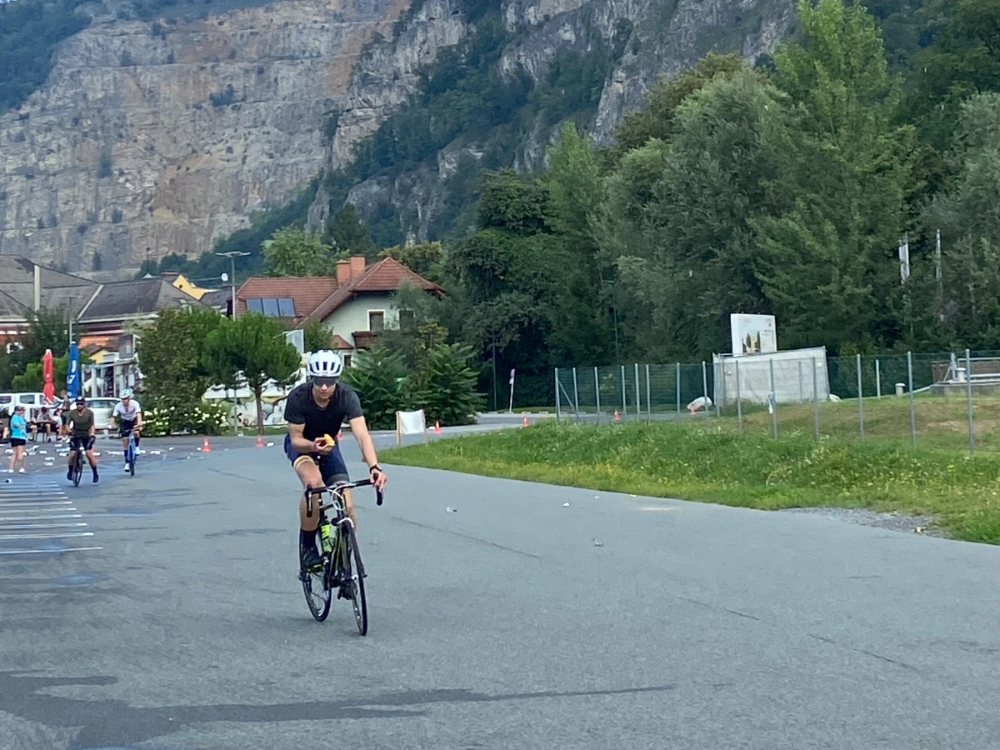
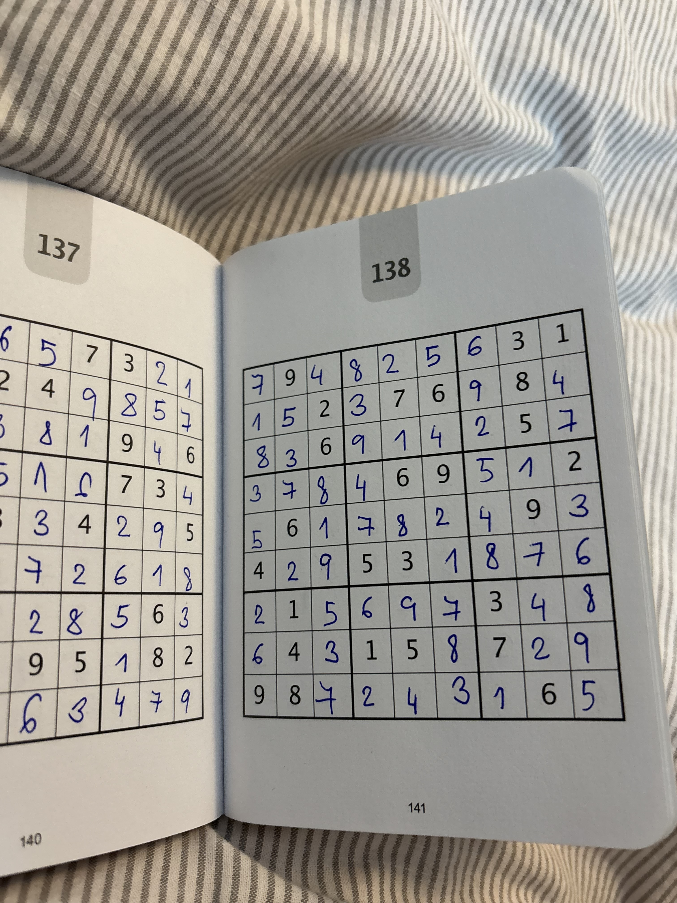

I'm studying for a Master of Financial Mathematics at MIT, completing a graduate certificate in statistics at Stanford in parallel. My interests lie in empirical research on market data: building return-predictive strategies, testing whether they survive out of sample, and turning them into portfolios. Along the way, this has grown into a deeper interest in deep learning, both in combining and applying established neural network methods when building those strategies, and in understanding the models themselves: how the architecture shapes what they can learn, and what a trained one is actually doing. I split my time between Cambridge, MA and the Czech Republic, and do my best thinking in libraries and on steep ground.
Four GRU experts, each a different bet on how to read the same year of returns. A gate sees market state and decides who speaks. The question is whether it learns to route, or quietly collapses onto one expert.
A year of returns goes in. What survives the recurrence, and does the prediction benefit? Two memory bottlenecks took gross Sharpe from 1.25 to 2.36 at the same 15,361 parameters: an unearned copying prior and a narrowing transport map.
Read more →
Replicating the index with 30 stocks: which covariance estimator should feed the optimiser, and can you trust its risk forecast out of sample?
Read more →

